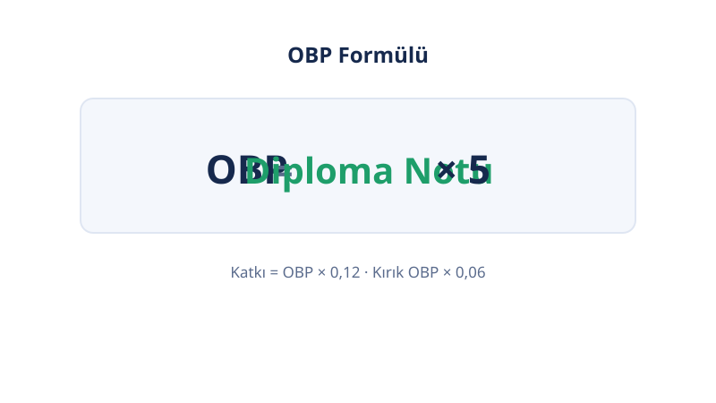

Ana Sayfa › Üniversite Giriş
🎓 Üniversite Giriş
YKS Hesaplama Araçları
YKS hesaplama araçları: YKS puan hesaplama (TYT–AYT–YDT), OBP hesaplama, MSÜ puan hesaplama, YKS tercih robotu ve üniversite taban puanları. Beş araç, tek akış: önce puanını hesapla, diploma katkını ekle, hedef listeni kur.
Son güncelleme: · Yazar: PuanRobotu Editör Ekibi
Araçlar
Hangi Araç Ne İçin?
| Araç | Ne Yapar | Ne Zaman |
|---|---|---|
| MSÜ puan hesaplama | SA, EA, SÖZ, GN tahmini puan (OBP'siz) | Mart'taki MSÜ'den sonra |
| YKS puan hesaplama | TYT–AYT–YDT ham ve yerleştirme puanı tahmini | Deneme sonuçlarından sonra |
| OBP hesaplama | Diploma notunun yerleştirme puanına katkısı | Puan hesaplamayla birlikte |
| Üniversite taban puanları | Taban puan ve kapanış sırası referans tabloları | Tercih dönemi öncesi |
| YKS tercih robotu | Başarı sırana göre hedef program listesi | Tercih döneminde |
YKS Süreci: Doğru Sıralama
- MSÜ (Mart): Askeri okulları düşünenler önce MSÜ'ye girer; sonuç MSÜ puan hesaplama ile tahmin edilir.
- TYT–AYT–YDT (Haziran): Sınavdan sonra tahmini puan YKS puan hesaplama ile bulunur.
- OBP eklenir: Diploma katkısı OBP hesaplama ile yerleştirme puanına işlenir.
- Tercih listesi kurulur: Üniversite taban puanları okuma kılavuzuyla referans alınır; YKS tercih robotu ile hedef liste çıkarılır.
YKS Puan Türleri Kısa Rehberi
Beş puan türü vardır; her biri farklı test bileşiminden oluşur. TYT puanı yalnızca dört TYT testinden; SAY, EA, SÖZ puanları TYT'nin %40'ı ile ilgili AYT testlerinin ağırlıklı toplamından; DİL puanı TYT + YDT'den hesaplanır. Ayrıntılı katsayı tablosu YKS puan hesaplama sayfasındadır.



Üç oturumun ortak kuralı: Net = Doğru − (Yanlış ÷ 4); 4 yanlış 1 doğruyu götürür. TYT'de ayrıca 0,5 net kuralı vardır: Türkçe veya Temel Matematik'ten en az 0,5 ham puan yoksa TYT puanı hesaplanmaz.
Sık Sorulan Sorular
YKS nedir?
YKS, üniversiteye giriş için ÖSYM'nin yaptığı üç oturumlu sınavdır: TYT, AYT ve YDT. TYT temel yeterliliği, AYT alan bilgisini, YDT yabancı dil seviyesini ölçer.
TYT puanı ile hangi bölümlere girilir?
TYT puanıyla 2 yıllık önlisans programlarına ve özel yetenek sınavı gerektirmeyen bazı lisans programlarına girilir. 4 yıllık lisans bölümleri için AYT veya YDT puan türü gerekir.
SAY, EA, SÖZ ve DİL puanları nasıl oluşur?
TYT netlerinin %40'ı ile ilgili AYT testlerinin ağırlıklı toplamından oluşur. SAY için AYT Matematik-Fen, EA için Matematik-Edebiyat, SÖZ için Edebiyat-Sosyal, DİL için YDT ağırlıklıdır.
OBP yerleştirme puanına nasıl eklenir?
Diploma notunun 5 katı alınır (OBP), yerleştirme puanına OBP × 0,12 olarak eklenir. Kırık OBP durumunda katsayı 0,06'ya iner. Ayrıntılar OBP hesaplama sayfasındadır.
MSÜ ile YKS arasındaki ilişki nedir?
MSÜ, askeri okullara çağrı için ayrı bir sınavdır; YKS'nin yerine geçmez. Harp Okulları AYT, Astsubay MYO'lar TYT puanı da ister. Ayrıntılar MSÜ puan hesaplama sayfasındadır.
Tercih döneminde hangi sırayla ilerlemeliyim?
Önce puanını hesapla, OBP katkını ekle, taban puan tablolarını oku, sonra tercih robotuyla hedef listeni kur. Listenin üstüne istek sırasına göre diz; strateji başarı sırası üzerinden kurulur.